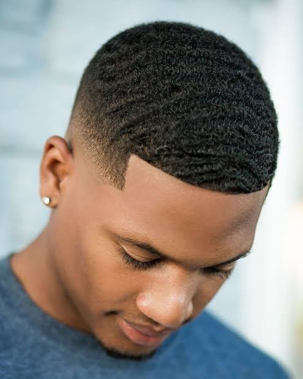

Cut Shop
Cortes com sabor

Cortes com sabor

Galera, se liguem nesse corte aqui que é clássico e nunca sai de moda: o *360 Waves com Low Taper Fade*.
A base do corte:
O que temos aqui é o famoso _Waves_ ou "Ondas 360". Esse efeito não é só o corte, é um estilo de vida.O segredo das ondas:
Pra chegar nesse resultado não basta só cortar. O _waves_ é conquistado com muita escovação diária, uso de durag pra deitar o fio, e hidratação.O degradê:
Acompanhando as ondas, temos um _Low Taper Fade_. Reparem que o degradê é baixo e discreto, começando na costeletas e na nuca. Ele só "limpa" as laterais e a parte de trás, sem subir muito.Acabamento:
O que fecha o corte com chave de ouro é o _Line Up_ ou _Crispy Line_. A linha da testa e das têmporas é feita na navalha, reta e bem marcada.Pra quem é esse corte
É pro homem que curte um visual alinhado, disciplinado e com estilo. É um corte que passa uma imagem de cuidado e detalhe.Resumindo:
o *360 Waves com Low Taper* é a união perfeita entre cultura, estilo e acabamento técnico. É limpo, é clássico e impõe respeito onde chega.